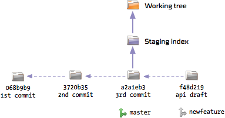
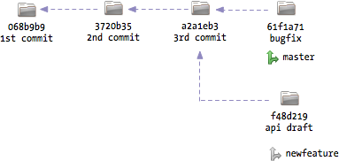
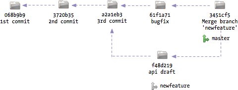
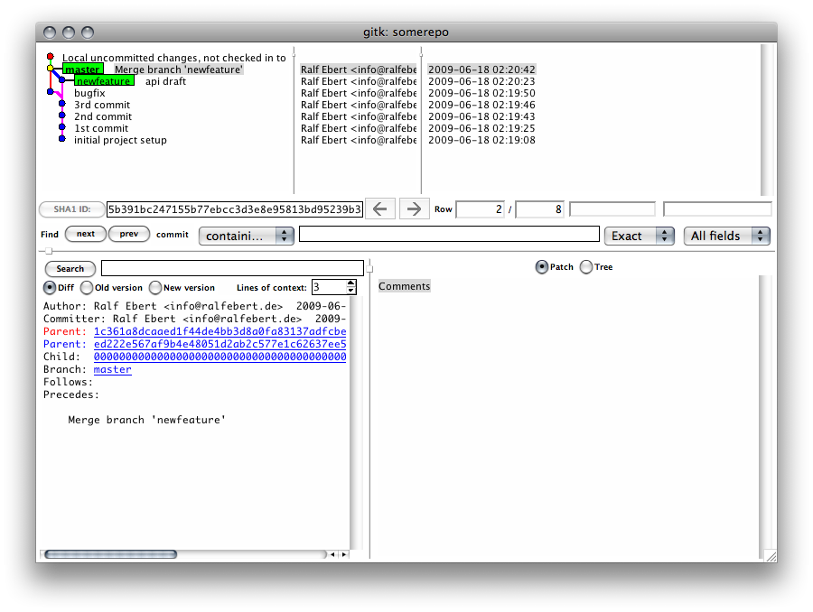

Git Tutorial
Modified from git tutorals
Git installation on Linux
Linux distributions provide packages for git, for example Ubuntu 10.10 comes
with git 1.7.1:
sudo apt-get install git
git --version
git version 1.7.1
Creating a new repository
git init creates an empty git repository in the current folder:
git init
This might surprise readers who are accustomed to traditional version control
systems like CVS or SVN. A git repository can be a completely local
undertaking. The whole repository content is stored in a folder named .git
in the root of the project folder:
Of course git can also work with remote or central repositories, but it does
not require them. We will have a look at working with remote repositories in a
forthcoming part of the tutorial. For the moment let us enjoy the freedom of
creating a repository locally whenever and for whatever reason we may need
one!
The working tree
Your own files in the repository folder are called working tree:
The staging index
Git internally holds a thing called the index, which is a snapshot of your
project files. After you have just created an empty repository, the index will
be empty. You must manually stage the files from your working tree to the
index using git add:
git add somefile.txt
git add works recursively, so you can also add whole folders:
git add somefolder
The same applies if you change a file in your working tree - you have to add
this change to the index with git add:
edit somefile.txt
git add somefile.txt

It’s important to realize that the index is a full snapshot of your project files - it is not just a list of the changed files.
Committing
git commit takes the contents of the index and creates a new commit:
git commit -m "the 1st commit"
Committing is a completely local operation, not related to sending something to a remote server. It just takes the contents of the index and keeps a snapshot of your project files as they were in the index:
Similiar to the index a commit is a full snapshot of your project files.
Different from traditional version control systems, commits are not numbered.
Instead, a commit gets assigned a SHA-1 hash of the snapshot contents:

This may look awkward the first time you see it. But it brings a huge advantage with it: every commit, which is a full snapshot of your project files, is identified by a cryptographically tamper-proof signature of your file contents. If somehow one byte of the contents or history of your files changes, you would end up with an entirely different hash. So you’re guaranteed to get out what you put into a git repository.
Also, you don’t need to write the full commit hash when you want to refer to some specific commit - you can always abbreviate them by their first characters. The first seven characters are usually enough to identify one commit uniquely.
Commit history
The workflow for editing files in a git repository looks like this:
You make changes to the
working treefiles. You add these changes to theindexusinggit add. You create a new commit from theindexusinggit commit.
As you do this repeatedly, you will create a new commit each time, pointing
back to the previous commit:

This is how git keeps track of the project history. It stores snapshots of the
project files as commits. These commits point back to the commit they were
created from. Of course, all these snapshots are saved in a very efficient
manner occupying only a fraction of disk space compared to a full copy of all
your files.
You can see the history using git log:
git log
commit 068b9b9...
Author: Bob bob@example.com
Date: Wed Jun 17 17:21:16 2009 +0200
the 3rd commit
commit 3720b35...
Author: Bob bob@example.com
Date: Wed Jun 17 17:21:10 2009 +0200
the 2nd commit
commit a2a1eb3...
Author: Bob bob@example.com
Date: Wed Jun 17 17:21:10 2009 +0200
the 1st commit
git can also show a shorter version of the history using:
git log --pretty=oneline --abbrev-commit
068b9b9 the 3rd commit
3720b35 the 2nd commit
a2a1eb3 the 1st commit
Git configuration: user settings
If you look at the full commit messages above, you will see that they contain information about their author. Where does git take this information from when it created the commit? Initially, it tries to guess these from your username and hostname. You can also configure them for your project manually:
git config user.name "Bob"
git config user.email "bob@example.com"
You can also configure this globally for all your git projects:
git config --global user.name "Bob"
git config --global user.email "bob@example.com"
Seeing what will be committed
git status shows you how the working tree is different from the index
and how the index is different from the last commit:
git status
At first, you will see the changes that were already added to the index.
This list represents what will be in your next commit:
Changes to be committed:
modified: changed_file_added.txt
Also, git will show the changes that have been made to the working tree, but
were not yet added to the index:
Changed but not updated:
modified: changed_file.txt
untracked files:
newfile.txt
Shortcut: How to add changed files when committing
When committing, you can leave the task of adding the changed files to git
using the -a command line option:
git commit -a -m "commit message"
This will add all changed (but not new) files to the index before committing.
Throwing changes away
What if you made some changes to your project and want to return to the original state? This depends on where the changes are.
If you have not added them to the index yet, you can restore them from the
index using git checkout <filename>:
git checkout somefile.txt
This restores a file or a folder as it is stored in the index to your
working tree:

What if you have already added the changes to the index? You can restore the
index to the last commit using git reset:
git reset HEAD somefile.txt
You can also restore the whole index:
git reset HEAD
HEAD always refers to the last commit which has been made. Using this, the
index is restored to the contents of the last commit - you can then use git
checkout to restore your working tree as well:
Reverting commits
If you have already committed your changes, you can make use of git’s built-in
“undo” command called git revert <commit>:
git revert 068b9b9
This will create a second commit which undoes the changes of the given commit:
8b54ea7 Revert "the 3rd commit"
068b9b9 the 3rd commit
3720b35 the 2nd commit
a2a1eb3 the 1st commit
Please note that you can also revert older commits:
git revert 3720b35
git log --pretty=oneline --abbrev-commit ab621c7 Revert "the 2nd commit" 068b9b9 the 3rd commit 3720b35 the 2nd commit a2a1eb3 the 1st commit
However, reverting older commits can cause a conflict if the other commits changed the same contents in the meantime. We will see how such conflicts are resolved later on.
Seeing the diff between commits
To see the difference from one commit compared to its parent, use git show
<commit>:
git show 3720b35
To compare two specific commits, use git diff <commit_from>..<commit_to>:
git diff a2a1eb3..068b9b9
To see the diffs for the complete history, use git log -p
git log -p
Configuring git: colored console output
Many commands like git status and git diff can show colored console
output, which helps reading their output. You can configure this globally
using:
git config --global color.ui auto
Tagging commits
git tag <name> <commit> assigns a tag to a commit. If <commit> is omitted,
the last commit gets tagged:
git tag working 3720b35
git tag broken
A tag is nothing more than a label that can be used to refer to the tagged
commit:
Tags can be used everywhere where you can use the commit hash, for example in
git diff:
git diff working..broken
Tags are perfect for labeling specific points in the history. It is very common to label commits with the version number when you publish a release of your project - this way you can find these important commits easily:
git tag v1.0.3
Branches
So far we have seen how you can create commits and work with them. Up until this point, all the history of our repository has been linear.
Let’s say we we want to develop a new feature for our project. This is something very large and we want to keep those changes separate from other changes. With branches, we can do that.
All the time, we were already working in a branch called master. This branch
was created automatically when we created the repository. You can see all
branches in the repository using git branch:
git branch
master
So there is one branch called master. The asterisk denotes that this is the
branch we are working on. A branch can be compared, to some extent, with a
tag. At all times, a branch points to some commit, in our case to the latest
commit we made. You can prove that using:
git branch -v
master 068b9b9 the 3rd commit
To track changes in a separate branch, we have to create a new one using git
branch <name> <commit>. The specified commit will be the starting point for
the new branch - if you omit it, the latest commit will be used:
git branch newfeature
This will create a new branch called newfeature based on the latest commit
in master:
At all times, there is one specific active branch. If you call git branch,
you will see that a new branch named newfeature was created, but master is
still the active one:
git branch
master
newfeature
You can switch between branches using git checkout <branchname>. This is the
same command we used before to get files from the staging index to the working
tree. The meaning of git checkout depends on its arguments.
git checkout newfeature
Now the active branch in our repository is newfeature:
git branch
master
newfeature
We can start working in this branch using the already known commands git
add, git commit, etc. Let’s see what happens when we create a new commit in
the branch:
edit somefile.txt
git commit -a -m "api draft"

The commit was added to the repository and the branch newfeature now points
to the new commit. Conceptually a branch can be seen as a pointer to some
commit. Whenever you commit something, this “pointer” of the active branch is
moved forward to the new commit. This is everything it takes to keep branches
separate.
To continue the example, let’s say we are finished with working on our new
feature for the moment and want to continue working on the master branch. That
is easy - we just switch back to the master branch:
git checkout master
This will set the active branch back to master. It will also reset the
index and your working tree to the contents of the last commit in master:

So you will see the project in the exact same state it was in when we forked
off the new branch. There will be no trace of the changes of the newfeature
branch.
What happens if we add some changes and commit these?
edit somefile.txt
git commit -a -m "bugfix"
The same as before: A new commit will be created based on the latest commit in
master and master will be pointing to the new commit after that:

Branches are very cheap and fast in git, you can create as many as you need.
Some developers like to work with a stable and an unstable branch whereas
some developers create a branch for every new feature they are working on -
it’s up to you.
Merging
Let’s say we have completed the new feature and want to get it back into the
master branch. This can be achieved with the git merge command whilst
having the master branch selected as the active branch:
git merge newfeature
If all goes well there will be no conflicts and git will just create a new commit containing the changes which have been made in both branches:

Generally, git is very smart about merging. However, if the same contents were changed in both branches, a conflict will arise:
CONFLICT (content): Merge conflict in somefile.txt
Automatic merge failed; fix conflicts and then commit the result.
We have to resolve this conflict manually. If you have a look at the file with the conflict, you will see the respective lines marked. On the top you will see the version from the active branch, below you will see the version from the merged branch:
<<<<<<< HEAD:somefile.txt
this change was done in master
=======
this change was done in newfeature
>>>>>>> newfeature:somefile.txt
You have to resolve this conflict and remove the markers. After that you add
the file to the index and commit the result:
git add somefile.txt
git commit
After you have merged the branch, you can delete it should you not need it anymore:
git branch -d newfeature
You could also continue working in the branch and later merge it again. git will be smart enough to know that parts of the branch have been merged already and will only apply the new changes.
Tools
Some versioning tasks can be performed in a simpler manner using GUI
applications. git comes with the history browser gitk:

For staging changes and committing you can use git gui:
These tools are not pretty, but they do their job very well. Mac OS X users
can use a nice alternative application for both tasks called
gitx